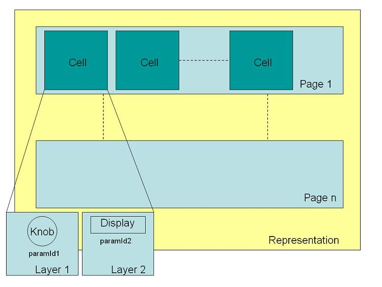

/ VST Home / Technical Documentation
[3.5.0] Remote Presentation of Parameters
On this page:
- Introduction
- Example
- Graphical overview
- Example of implementation using helper class
- Location table for VST XMLs representation
- For Windows XP/2000 platform
Introduction
How to better support remote devices/controllers (UI and hardware) for parameters.
Since VST 3.5, a new interface is available: Vst:: IXmlRepresentationController
Extended plug-in interface Vst:: IEditController for a component: Vst:: IXmlRepresentationController
- [plug imp]
- [extends Vst:: IEditController]
- [released: 3.5.0]
- [optional]
A representation based on XML is a way to export, structure, and group plug-in parameters for a specific remote (hardware or software rack (such as quick controls)). It allows to describe each parameter more precisely (what is the best matching to a knob, different title lengths matching limited remote display, ...).
- A representation is composed of pages (this means that to see all exported parameters, the user has to navigate through the pages).
- A page is composed of cells (for example, 8 cells per page).
- A cell is composed of layers (for example, a cell can have a knob, a display, and a button, which means 3 layers).
- A layer is associated to a plug-in parameter using the ParameterID as identifier:
- it could be a knob with a display for title and/or value, this display uses the same ParameterID, but it could be another one.
- switch
- link which allows to jump directly to a subpage (on another page)
- more... See Vst::LayerType
This representation is implemented as XML text following the Document Type Definition (DTD): http://dtd.steinberg.net/VST-Remote-1.1.dtd
Example
Here an example of what should be passed in the stream of getXmlRepresentationStream:
<?xml version="1.0" encoding="utf-8"?>
<!DOCTYPE vstXML PUBLIC "-//Steinberg//DTD VST Remote 1.1//EN" "http://dtd.steinberg.net/VST-Remote-1.1.dtd">
<vstXML version="1.0">
<plugin classID="341FC5898AAA46A7A506BC0799E882AE" name="Chorus" vendor="Steinberg Media Technologies" />
<originator>My name</originator>
<date>2010-12-31</date>
<comment>This is an example for 4 Cells per Page for the Remote named ProductRemote
from company HardwareCompany.</comment>
<!-- ===================================== -->
<representation name="ProductRemote" vendor="HardwareCompany" version="1.0">
<page name="Root">
<cell>
<layer type="knob" parameterID="0">
<titleDisplay>
<name>Mix dry/wet</name>
<name>Mix</name>
</titleDisplay>
</layer>
</cell>
<cell>
<layer type="display"></layer>
</cell>
<cell>
<layer type="knob" parameterID="3">
<titleDisplay>
<name>Delay</name>
<name>Dly</name>
</titleDisplay>
</layer>
</cell>
<cell>
<layer type="knob" parameterID="15">
<titleDisplay>
<name>Spatial</name>
<name>Spat</name>
</titleDisplay>
</layer>
</cell>
</page>
<page name="Page 2">
<cell>
<layer type="LED" ledStyle="spread" parameterID="2">
<titleDisplay>
<name>Width +</name>
<name>Widt</name>
</titleDisplay>
</layer>
<!--this is the switch for shape A/B-->
<layer type="switch" switchStyle="pushIncLooped" parameterID="4"></layer>
</cell>
<cell>
<layer type="display"></layer>
</cell>
<cell>
<layer type="LED" ledStyle="singleDot" parameterID="17">
<titleDisplay>
<name>Sync Note +</name>
<name>Note</name>
</titleDisplay>
</layer>
<!--this is the switch for sync to tempo on /off-->
<layer type="switch" switchStyle="pushIncLooped" parameterID="16"></layer>
</cell>
<cell>
<layer type="knob" parameterID="1">
<titleDisplay>
<name>Rate</name>
</titleDisplay>
</layer>
</cell>
</page>
</representation>
</vstXML>
Graphical overview

Example of implementation using helper class
See Vst:: XmlRepresentationHelper.
Location table for VST XMLs representation
When a host needs to use a VST XMLs representation (for internal use, like quick control assignments, to get the most important parameters sorted per page of a plug-in), the host will check the presence in a specific location for a given remote and for this given plug-in a representation XML file with the remote name as filename (check below about how the path is defined). If this is not found, the host will ask the plug-in by using Steinberg::Vst::IXmlRepresentationController (if implemented).
Explanation:
- priority column:
- specifies the scan order by the host. Path #1 will be checked first, #8 will be checked last. The first XML found will be used and overrides the others.
- type of column:
- user: specific to the currently logged in user
- shared: for all users of this machine
- factory: installed by plug-in or application installer with the plug-in
- $COMPANY and $PLUGIN-NAME folder names contain only allowed characters for file naming
- replace characters "\*?/:.<>|\"\t\n\r" by "_"
- $UID is the Unique ID of the processor in its string representation
- for example: "57F704D1FA974D668083E4B9AF581D23" len=32)
For Mac platform
| Prio | Type | Scope | Write | Path | Comment |
|---|---|---|---|---|---|
| 1 | User | User | X | Users/$USERNAME/Library/Audio/VST XMLs/$COMPANY/$PLUGIN-NAME/$UID | |
| 2 | User | User | X | Users/$USERNAME/Library/Audio/VST XMLs/$COMPANY/$PLUGIN-NAME | |
| 3 | Shared_Factory | Public | - | Library/Audio/VST XMLs/$COMPANY/$PLUGIN-NAME/$UID | Computer shared FactoryROM |
| 4 | Shared_Factory | Public | - | Library/Audio/VST XMLs/$COMPANY/$PLUGIN-NAME | Computer shared FactoryROM |
| 5 | App_Factory | Apps | - | [$APPFOLDER]/VST XMLs/$COMPANY/$PLUGIN-NAME/$UID | Host Application |
| 6 | App_Factory | Apps | - | [$APPFOLDER]/VST XMLs/$COMPANY/$PLUGIN-NAME | Host Application |
| 7 | Plug_Factory | Plugs | - | $PLUGIN-PATH/Contents/Resources/VST XMLs/$PLUGIN-NAME/$UID | Plug-in Bundle |
| 8 | Plug_Factory | Plugs | - | $PLUGIN-PATH/Contents/Resources/VST XMLs/$PLUGIN-NAME | Plug-in Bundle |
For Windows Vista/7/8/10/11 platform
| Prio | Type | Scope | Write | Path | Comment |
|---|---|---|---|---|---|
| 1 | User | User | X | [Users/$USERNAME/Documents]/VST XMLs/$COMPANY/$PLUGIN-NAME/$UID | FOLDERID_Documents |
| 2 | User | User | X | [Users/$USERNAME/Documents]/VST XMLs/$COMPANY/$PLUGIN-NAME | FOLDERID_Documents |
| 3 | User_Factory | User | X | [Users/$USERNAME/AppData/Roaming]/VST XMLs/$COMPANY/$PLUGIN-NAME/$UID | FOLDERID_RoamingAppData |
| 4 | User_Factory | User | X | [Users/$USERNAME/AppData/Roaming]/VST XMLs/$COMPANY/$PLUGIN-NAME | FOLDERID_RoamingAppData |
| 5 | Shared_Factory | Public | - | [ProgramData]/VST XMLs/$COMPANY/$PLUGIN-NAME/$UID | FOLDERID_ProgramData |
| 6 | Shared_Factory | Public | - | [ProgramData]/VST XMLs/$COMPANY/$PLUGIN-NAME | FOLDERID_ProgramData |
| 7 | App_Factory | Apps | - | [$APPFOLDER]/VST XMLs/$COMPANY/ | Host Application |
| 8 | App_Factory | Apps | - | [$APPFOLDER]/VST XMLs/$COMPANY/$PLUGIN-NAME | Host Application |
| 9 | Plug_Factory | Plugs | - | $PLUGIN-PATH/Contents/Resources/VST XMLs/$PLUGIN-NAME/$UID | Plug-in Bundle |
| 10 | Plug_Factory | Plugs | - | $PLUGIN-PATH/Contents/Resources/VST XMLs/$PLUGIN-NAME | Plug-in Bundle |
For Windows XP/2000 platform
| Prio | Type | Scope | Write | Path | Comment |
|---|---|---|---|---|---|
| 1 | User | User | X | [My Documents]/VST XMLs/$COMPANY/$PLUGIN-NAME/$UID | CSIDL_PERSONAL |
| 2 | User | User | X | [My Documents]/VST XMLs/$COMPANY/$PLUGIN-NAME | CSIDL_PERSONAL |
| 3 | User_Factory | User | X | [Documents and Settings/$USERNAME/Application Data]/VST XMLs/$COMPANY/$PLUGIN-NAME/$UID | CSIDL_APPDATA |
| 4 | User_Factory | User | X | [Documents and Settings/$USERNAME/Application Data]/VST XMLs/$COMPANY/$PLUGIN-NAME | CSIDL_APPDATA |
| 5 | Shared_Factory | Public | - | [Documents and Settings/$ALLUSERS/Application Data]/VST XMLs/$COMPANY/$PLUGIN-NAME/$UID | CSIDL_COMMON_APPDATA |
| 6 | Shared_Factory | Public | - | [Documents and Settings/$ALLUSERS/Application Data]/VST XMLs/$COMPANY/$PLUGIN-NAME | CSIDL_COMMON_APPDATA |
| 7 | App_Factory | Apps | - | [$APPFOLDER]/VST XMLs/$COMPANY/$PLUGIN-NAME/$UID | Host Application |
| 8 | App_Factory | Apps | - | [$APPFOLDER]/VST XMLs/$COMPANY/$PLUGIN-NAME | Host Application |
| 9 | Plug_Factory | Plugs | - | $PLUGIN-PATH/Contents/Resources/VST XMLs/$PLUGIN-NAME/$UID | Plug-in Bundle |
| 10 | Plug_Factory | Plugs | - | $PLUGIN-PATH/Contents/Resources/VST XMLs/$PLUGIN-NAME | Plug-in Bundle |